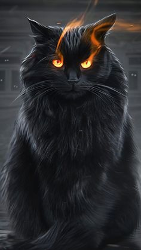
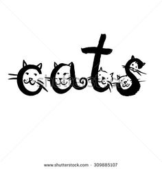
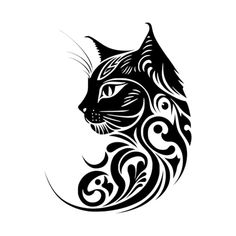

CATOPIA
purveyors of feline grace, where class meets whiskers
Setting the Standard for Feline Excellence
I love cats because I enjoy my home; and little by little, they become its visible soul. Cats leave paw prints in your heart, forever and always
Cats are one of the cutest pets and notorious at the same time. They are super lazy but also become super active if needed. They are a very good pet and will never bother you much unless you like to spend time with them. They are cute and soft at the same time, they look attractive and all of us like their sweet mew sound. Cats have very sweet features. It has two beautiful eyes, adorably tiny paws, sharp claws, and two perky ears which are very sensitive to sounds. It has a tiny body covered with smooth fur and it has a furry tail as well. Cats have an adorable face with a tiny nose, a big mouth and a few whiskers under its nose. Cats are generally white in colour but can also be brown, black, grey, cream or buff.

